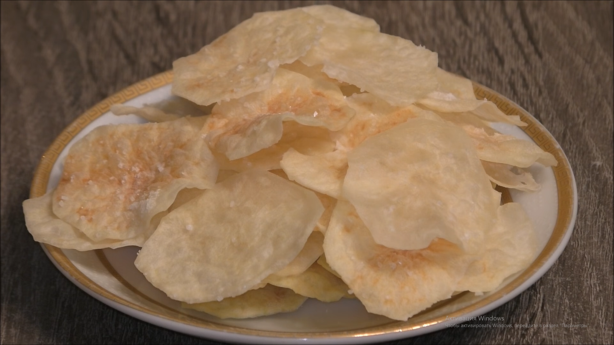
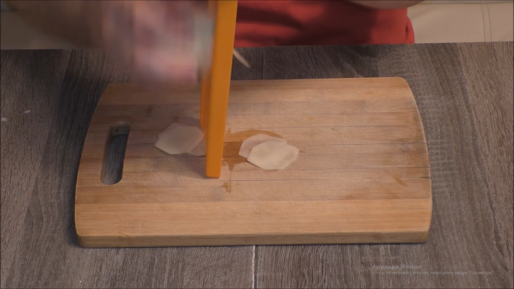
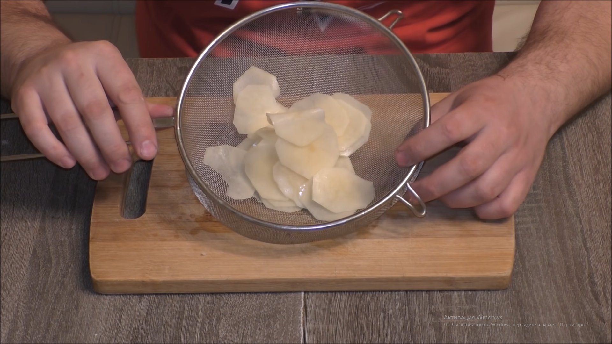
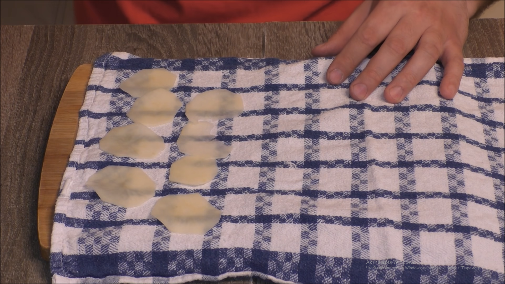
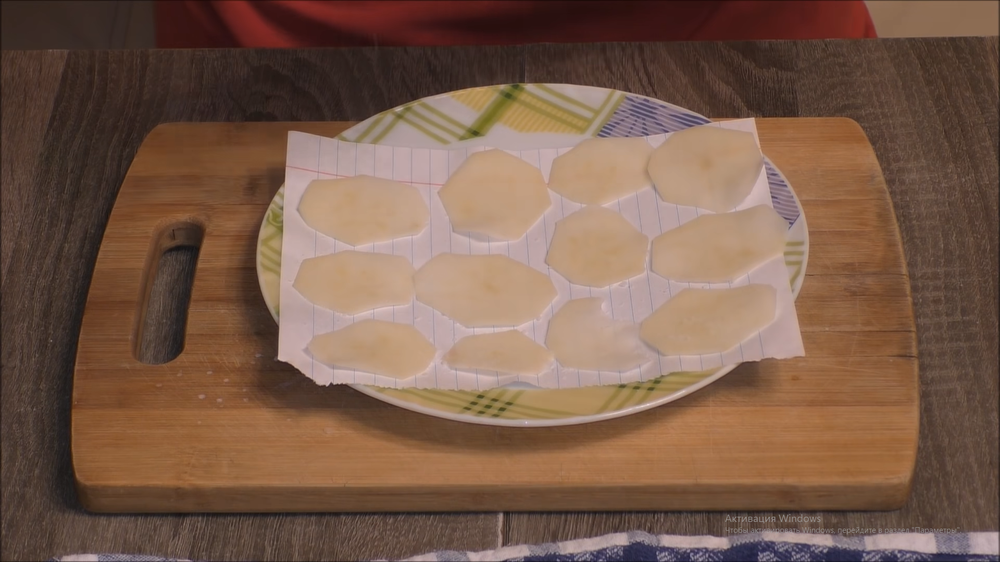
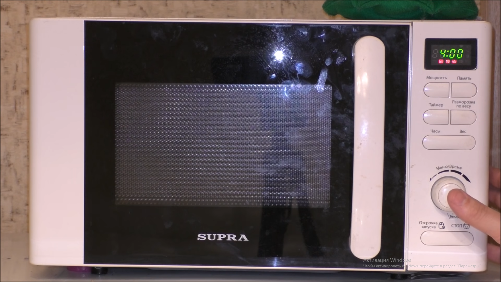

Чипсы в микроволновке
Хорошего дня! Сегодня я вам покажу рецепт чипсов в микроволновке

Для этого нам понадобится:
Картошка чищенная,
Соль.
для начала нарезаем картошку тонкими ломтиками с помощью тёрки для тонкой нарезки овощей.

затем мы берём эти ломтики и промываем их водой с помощью дуржлака.

после этого берём полотенце и просушиваем нашу картошку

затем берём пергаментную бумагу, выкладываем на неё картошку и солим.

после чего ставим в её в микроволновку на 4 минуты.

через 2 минуты проверьте состояние картошки. в том случае если блюдо готово, выкладывайте его на тарелку.
Блюдо готово